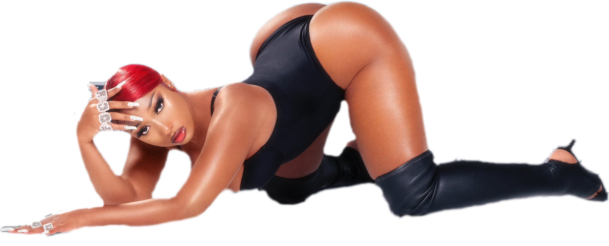

Megan Jovon Ruth Pete (born February 15, 1995), known professionally as Megan Thee Stallion (pronounced “Megan the Stallion”), is an American rapper. Originally from Houston, Texas, she first garnered attention when videos of her freestyling became popular on social media platforms such as Instagram. Megan Thee Stallion signed to 300 Entertainment in 2018, where she released the mixtape Fever (2019) and the extended play Suga (2020), both of which reached the top ten of the Billboard 200.
Throughout her career, Megan Thee Stallion has received several accolades, including six BET Awards, five BET Hip Hop Awards, four American Music Awards, two MTV Video Music Awards, a Billboard Women in Music Award, and three Grammy Awards. At the 63rd Annual Grammy Awards, she became the second female rapper to win Best New Artist, after Lauryn Hill in 1999. In 2020, Time named her one of the 100 most influential people in the world on their annual list. Outside of music, she has focused on her education, graduating from Texas Southern University with a Bachelor of Science in Health Administration in 2021.